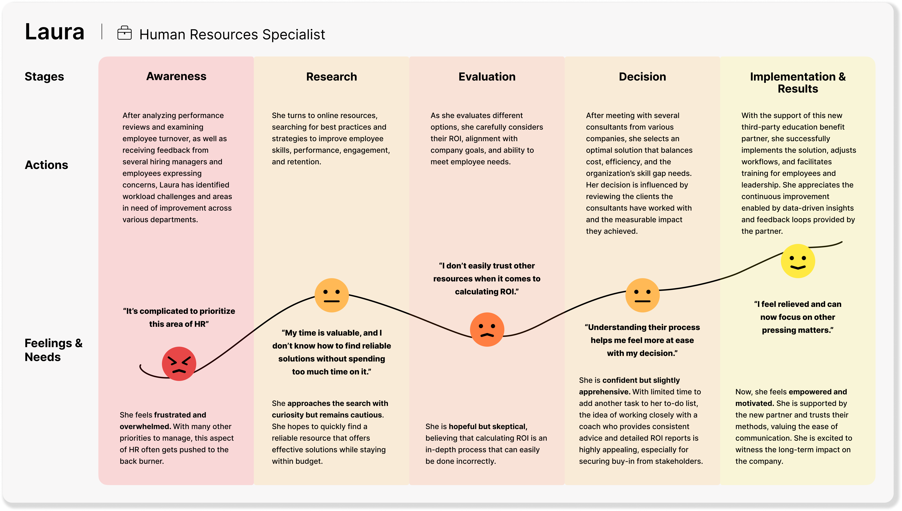
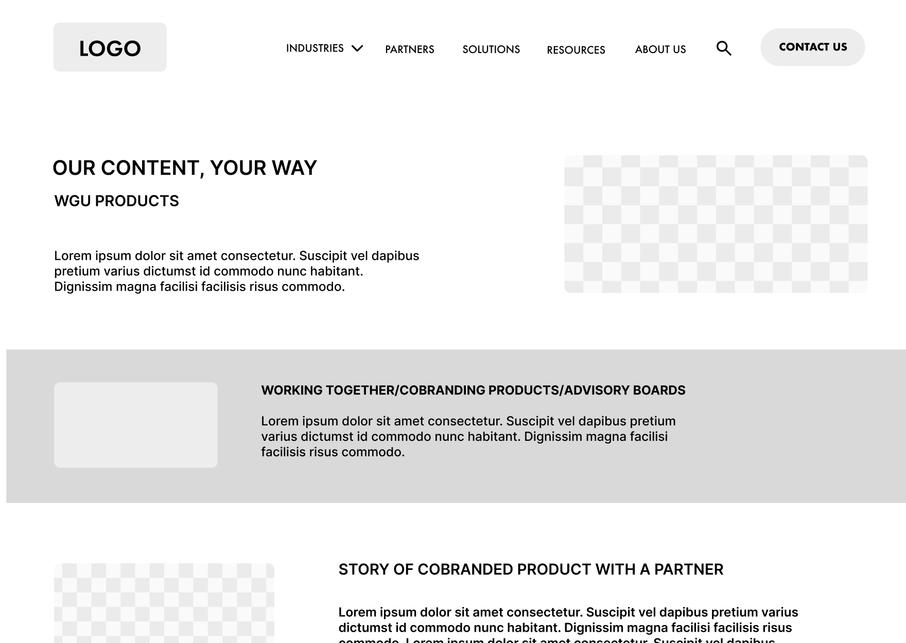
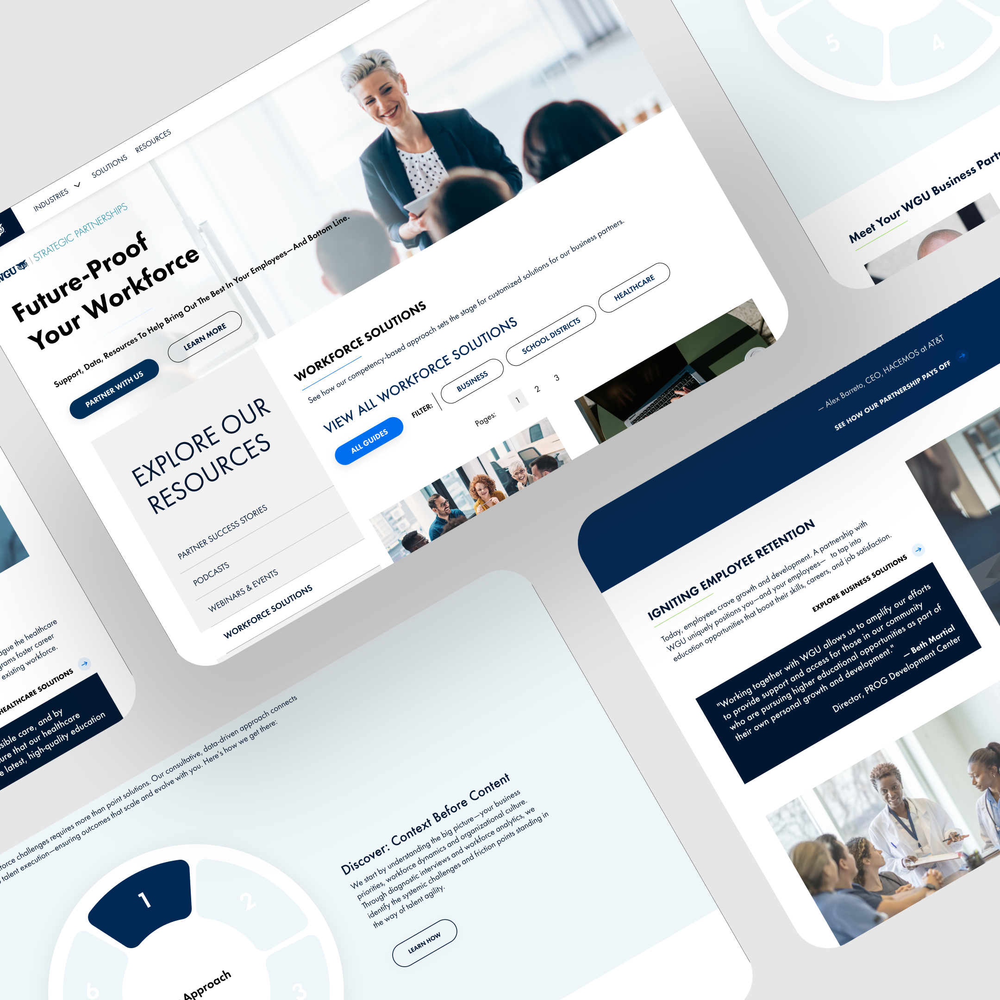
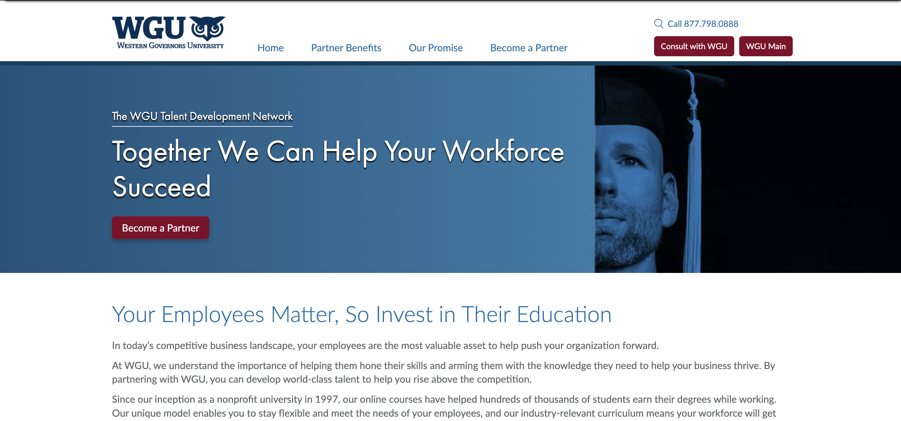
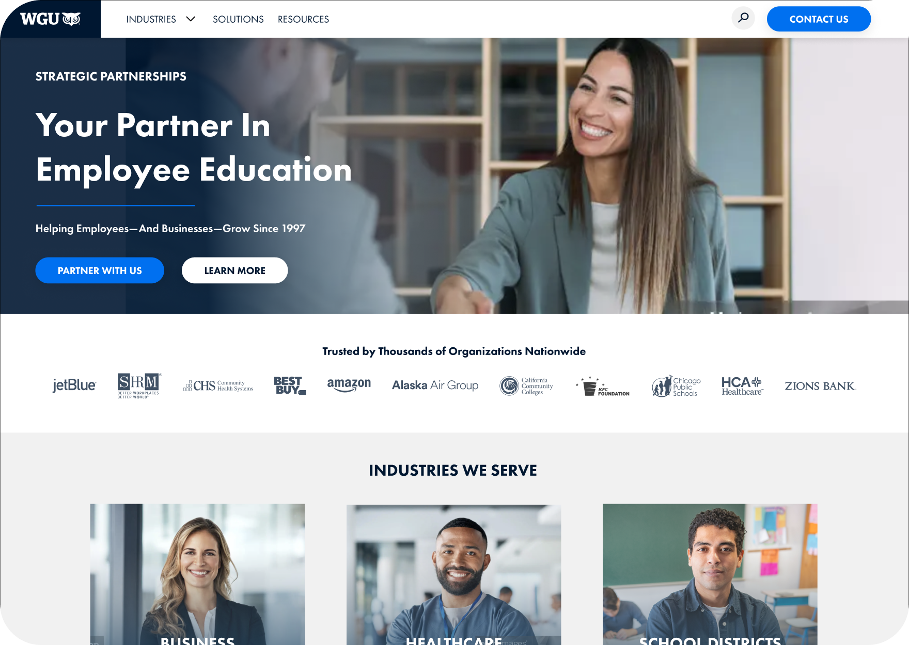

One front door was failing everyone
All three audiences arrived at the same page. With completely different decision criteria and evidence needs, a single page couldn't serve any of them well.
Redesigning WGU's partner-facing experience to end audience confusion, show ROI evidence before the sales call, and guide employers, workforce boards, and community colleges through journeys built for each of them.

wgu-partnerships-preview.jpg
Overview
WGU Workforce Solutions offered real value for employers, workforce boards, and community colleges, but the UX failed to communicate it. Different audiences arrived at the same page and left without understanding what partnerships included, how employees benefited, or how to take the next step.
Every partner type landed on the same undifferentiated page, saw the same generic content, and hit the same dead-end "Contact Us" button with nothing to justify the inquiry. The gap between WGU's actual offering and what partners could see online was costing qualified leads at every stage.
When a prospective partner asked what WGU offers, there was no consistent answer. The website showed one thing, marketing materials said another, and the answer could vary wildly depending on who was pitching.
Three failures were compounding to hold back partner conversion.
Employers, workforce boards, and colleges landed on identical pages despite having completely different needs, language, and decision criteria.
Partners couldn't tell what they were buying, what employees would experience, or how WGU differed from competing workforce vendors.
Decision-makers needed business-case evidence and retention data to build internal buy-in, and none of it existed in the experience.
Research
Before designing anything, I needed to understand why partners were landing and leaving without converting. Research ran on three tracks, each surfacing a different layer of the problem.

wgu-research.jpg
Partners arrived needing a business case, not a product pitch. The redesign had to show ROI data and outcomes before any sales interaction.
41%
Employees leaving jobsDue to lack of career development, a retention problem partners needed WGU to solve$1.5K+
Replacement costAverage per frontline employee, the ROI anchor the redesign had to show before the CTA78%
HR can't differentiateBetween workforce education vendors, so WGU had to stand out with evidence, not messaging aloneAll three audiences arrived at the same page. With completely different decision criteria and evidence needs, a single page couldn't serve any of them well.
Strong outcome data, case studies, and retention figures lived in sales decks and internal PDFs, but none of it appeared in the digital experience. Partners who needed a business case couldn't find one.
Guild Education and Bright Horizons offered named tiers, clear feature sets, and outcome data before any sales interaction. WGU compared poorly for partners who had already evaluated the category.
85% needed a clear partnership tier structure, 72% needed employee retention ROI data, and 64% needed to understand the downstream employee experience. All three were missing.
Process

wgu-partnerships-detail.jpg
Solutions
An audience selector at entry
All three audiences used to land on the same page. The redesign added an audience selector that routes employers, workforce boards, and colleges into tailored journeys, each with its own messaging, evidence matched to its decision criteria, and calls to action suited to its stage in a long B2B buying cycle.
Each partner type now sees the evidence most relevant to their decision
Scannable before contact
Partners couldn't tell what they were buying or how tiers differed. The redesign introduced named packages, the features included at each level, and outcome data tied to each tier, all visible before any sales conversation. Partners can now self-qualify and arrive at the inquiry already knowing which tier fits.
Clearer product structure shortens the path to inquiry
The business case, built in
Decision-makers couldn't build internal buy-in without retention and cost data. Retention ROI, replacement cost savings, and employee outcome metrics now appear above every primary call to action in every partner journey, giving champions the numbers to sell WGU internally before they ever talk to a rep.
83% task completion for identifying partnership value and next steps in usability testing

wgu-partnerships-screens.jpg
Outcomes
Success metrics were set up front and tied to three goals: better partner inquiry quality, higher task completion and clarity, and less early bounce. Results were measured through prototype testing and usability scoring against the original experience.
4.2×
83%
71%

wgu-partnerships-before.jpg

wgu-partnerships-after.jpg
Reflection
The clearest challenge was serving three very different audiences on one platform without fragmenting the experience or tripling the maintenance burden. Routing logic plus a shared component system was the right architecture, but it took discipline. Every content module had to work across partner contexts before we could justify building partner-specific variants on top.
If I started again, I'd run the content audit in week one, not week six. Finding out midway through design that strong ROI data already existed in internal sales decks cost a week of stakeholder back-and-forth. That data was the most valuable design input in the whole project, and finding it earlier would have sharpened the information architecture from the first wireframe.
The other lesson: involve partner representatives in the Define phase, not just Research. Their input on routing logic and tier naming would have sharpened both much earlier. Because they only joined during research, some Define decisions had to be revisited once real partners reviewed the wireframes, adding revision rounds that could have been avoided.